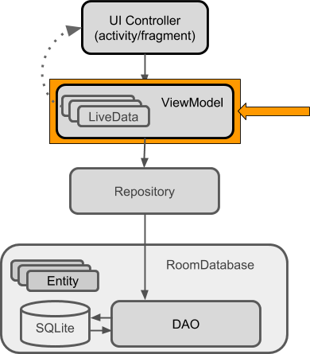

Membuat ViewModel


Untuk mengimplementasikan ViewModel silahkan mengikuti langkah-langkah
berikut:
Buatlah class
UserViewModelyang diturunkan dari classAndroidViewModel.public class UserViewModel extends AndroidViewModel { ... ... }Tekan tombol
Alt-Enterpada baris kode yang bergaris bawah merah, kemudian pilih menuCreate constructor matching super.Tambahkan atribut-atribut berikut ke dalam
UserViewModel.private UserRepository repository; private LiveData<User> user;Modifikasi constructor yang telah di auto generate, tambahkan untuk instansiasi atribut
repository.... this.repository = new UserRepository(application); ...UserRepositorybertanggung jawab untuk proses login dan register user, untuk menangani proses tersebut buatlah methodgetUser()yang akan mendapatkan user berdasarkanusernameserta methodinsert()yang digunakan untuk proses registrasi.public LiveData<User> getUser(String username) { user = repository.getUserByUsername(username); return user; }public void insert(User user) { repository.insert(user); }Tambahkan class
NoteViewModelyang diturunkan dariAndroidViewModel.public class NoteViewModel extends AndroidViewModel { ... ... }Generate constructor dengan menggunakan shortcut
Alt-EnterKemudian, tambahkan atribut-atribut berikut
private NoteRepository repository; private LiveData<List<Note>> notes;Modifikasi constructor bawaan dengan menambahkan pernyataan berikut yang digunakan untuk menginstansiasi obyek serta mengambil nilai awal.
... this.repository = new NoteRepository(application); this.notes = repository.getNotes(); ...Buatlah method getter untuk mendapatkan semua data catatan, ketik
getNoteskemudian tekan enter.Buatlah method untuk melakukan operasi insert, proses insert akan dilakukan oleh repository.
public void insert(Note note) { repository.insert(note); }Buatlah method untuk melakukan operasi update, proses update akan dilakukan oleh repository.
public void update(Note note) { repository.update(note); }